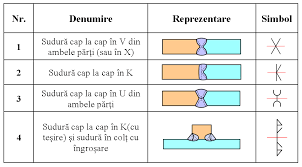
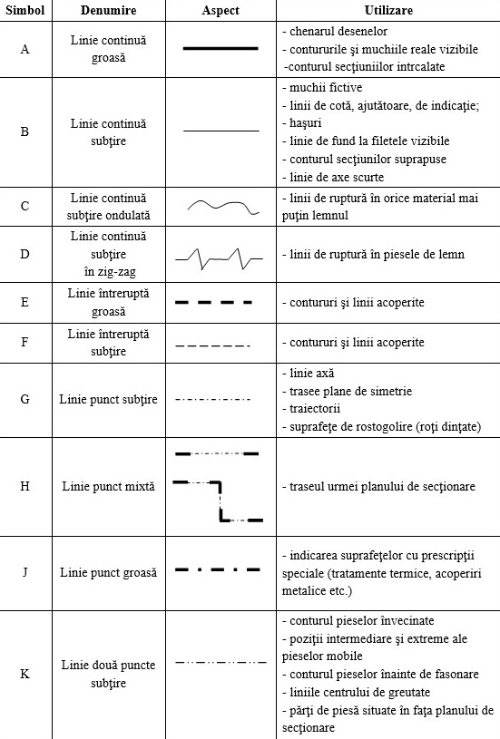

Capitolul 5: Elemente Standardizate
Ce sunt elementele standardizate?
Elementele standardizate sunt simboluri și componente utilizate în desenele tehnice care respectă standarde internaționale. Acestea includ simboluri pentru filet, sudură, toleranțe dimensionale și altele.
Simboluri comune:
- Simboluri pentru filet: Reprezentarea unui filet este standardizată pentru a asigura înțelegerea corectă între ingineri.
- Simboluri pentru sudură: Există diferite simboluri pentru tipurile de suduri utilizate, fiecare cu o semnificație specifică.
- Simboluri pentru toleranțe: Sunt folosite pentru a arăta limitele acceptabile ale dimensiunilor pieselor.
Exemplu de simboluri pentru sudură:

Exemplu de simboluri standardizate:

Resurse suplimentare